00이 매뉴얼에 대하여
겸용 펌프 용량 계산서(옥내소화전 + 스프링클러)는 옥내소화전설비와 스프링클러설비가 펌프 · 수원을 겸용할 때의 토출량 · 총 저수량 · 전양정 · 전동기 동력과 배관 사용압력 · 감압 · 헤드 상한 · 유속 판정을 한 화면에서 산정해 A4 계산서로 정리하는 도구입니다. 근거는 옥내소화전설비 · 스프링클러설비의 화재안전성능기준(NFPC 102 · 103) 소방청고시 제2025-25호(2026. 3. 1. 시행), 옥내소화전설비의 화재안전기술기준(NFTC 102) 국립소방연구원공고 제2026-34호 · 스프링클러설비의 화재안전기술기준(NFTC 103) 제2026-35호(2026. 7. 1. 시행), 고층건축물의 화재안전기술기준(NFTC 604) 공고 제2023-44호입니다.
| 항목 | 내용 |
|---|---|
| 대상 프로그램 | 겸용 펌프 용량 계산서 MANMIN Ver-5.1(v5.1.0) — 탭 막대 「📘 매뉴얼」 버튼으로 이 문서가 열립니다 |
| 접속 주소 | manminkim-eng.github.io/combo-pump-calc |
| 매뉴얼 판 | Ver-5.1 (화면 표기와 같은 판 번호, 초판) · 2026-10-16 · 작성 김만민 건축사(㈜대성건축사사무소) |
| 내려받기 | PDF(A4) · 겸용 펌프 용량 계산서 열기 |
| 예제 | 본문 그림은 예제 A(익산 업무시설 지상 9층 — 소화전 2개 + 헤드 10개)로 캡처했습니다 — 토출량 1,060 L/min · 총 저수량 28.267 m³ · 전양정 65 m · 30 HP. 예제 B(29층 오피스텔 — 1.2 MPa · 감압) · C(판매시설 — 방화벽 구획 단서)는 부록 A2 |
| 근거 법령 | 옥내소화전설비 · 스프링클러설비의 화재안전성능기준(NFPC 102 · 103) 소방청고시 제2025-25호(2026. 3. 1. 시행), 옥내소화전설비의 화재안전기술기준(NFTC 102) 국립소방연구원공고 제2026-34호 · 스프링클러설비의 화재안전기술기준(NFTC 103) 제2026-35호(2026. 7. 1. 시행), 고층건축물의 화재안전기술기준(NFTC 604) 공고 제2023-44호 — LawMCP(국가법령정보센터) 원문 대조(2026-10-16) |
| 범위 | 전동기 펌프 1대로 두 설비를 겸용하는 경우 — 고층건축물(30층 이상 또는 높이 120 m 이상)은 펌프를 각 설비 전용으로 해야 하므로(NFTC 604 2.1.3 · 2.2.3) 경고와 함께 참고 계산만 합니다 |
01한눈에 보기
설치 없이 브라우저에서 바로 실행되는 단일 페이지 앱(PWA)입니다. 입력한 내용은 브라우저 안에서만 계산되며 서버로 전송되지 않습니다.
무엇을 산정하나
설비별 토출량 · 수원 · 전양정 → 겸용 토출량 · 총 저수량 · 채택 전양정 · 전동기 동력(kW · HP)
겸용 기준
합산 원칙 · 방화벽과 방화문 구획 단서(최대값) · 옥상수조 1/3 · 공통 배관 손실 가산
압력 · 유속 판정
1.2 MPa 배관 · 옥내소화전 노즐 0.7 MPa 감압 · 헤드 1.2 MPa 상한 · 4 / 6 / 10 m/s
1-1. 화면 구성
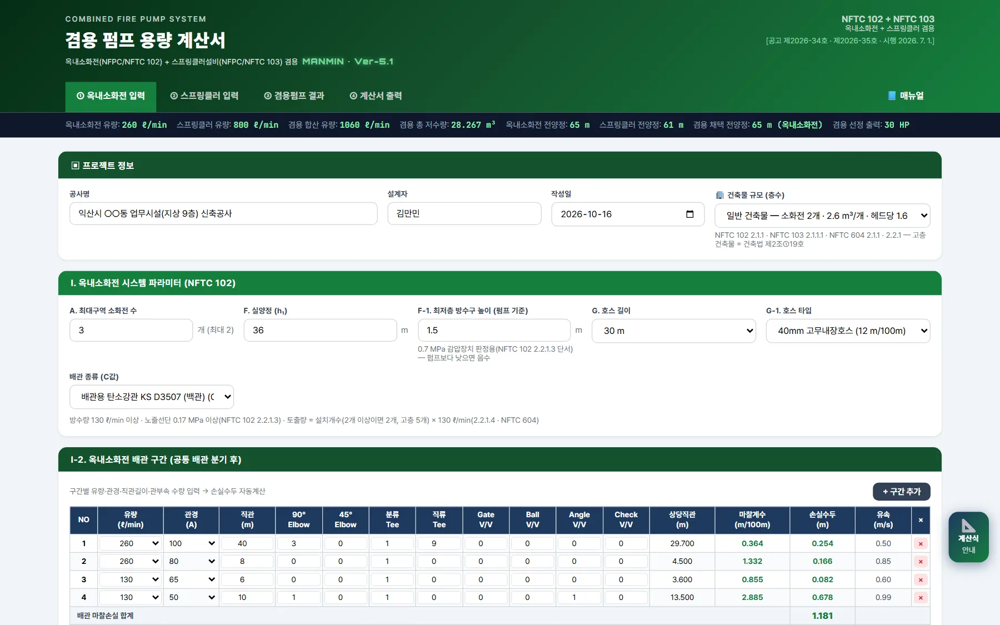
12345- 1작업 탭 · 매뉴얼
- 2요약 바
- 3프로젝트 · 건축물 규모
- 4옥내소화전 파라미터
- 5계산식 안내
| 영역 | 내용 |
|---|---|
| 헤더 · 탭 | 「① 옥내소화전 입력」 → 「② 스프링클러 입력」 → 「③ 겸용펌프 결과」 → 「④ 계산서 출력」, 오른쪽 끝 「📘 매뉴얼」 |
| 요약 바 | 어느 탭에 있든 설비별 유량 · 겸용 토출량 · 총 저수량 · 설비별 전양정 · 채택 전양정 · 선정 출력을 한 줄로 보여 줍니다 |
| 입력 상자 | 프로젝트 · 건축물 규모 → 옥내소화전 → 스프링클러 → 겸용 파라미터 · 공통 배관 — 값을 바꾸면 즉시 다시 계산됩니다 |
| 계산식 안내 | 오른쪽 「📐 계산식」 — 이용방법 · 옥내소화전 · 스프링클러 · 겸용 펌프 · 배관 · 공통 5개 탭 창 |
1-2. 작업 탭·근거 표시
- 1① 옥내소화전 입력
- 2② 스프링클러 입력
- 3③ 겸용펌프 결과
- 4④ 계산서 출력
- 5📘 매뉴얼
- 6근거 · 공고 · 시행일
헤더 오른쪽에는 적용 기준 NFTC 102 + NFTC 103과 [공고 제2026-34호 · 제2026-35호 · 시행 2026. 7. 1.]이 표시됩니다.
1-3. 설치·보관·매뉴얼
| 항목 | 내용 |
|---|---|
| 설치 | 브라우저 「홈 화면에 추가」 또는 설치 안내 — 설치하면 오프라인에서도 열립니다(앱 본체만 — 매뉴얼은 온라인 전용) |
| 보관 | 계산 결과는 A4 계산서(인쇄 · PDF · JPG)로 남깁니다. 앱은 입력값을 서버에 저장하지 않습니다 |
| 매뉴얼 | 탭 막대 오른쪽 「📘 매뉴얼」 — 이 문서(HTML)와 PDF(A4) |
021분 따라하기
예제 A — 익산 업무시설(지상 9층)입니다. 아래 순서대로 넣으면 토출량 1,060 L/min · 총 저수량 28.267 m³ · 전양정 65 m · 전동기 30 HP가 나옵니다.
- ① 프로젝트 · 건축물 규모공사명 · 설계자 · 작성일과 「일반 건축물」 — 고층건축물이면 겸용 펌프 불가 경고가 뜹니다(3-1).
- ② 옥내소화전가장 많은 층 3개(→ 2개 적용) · 실양정 36.0 m · 최저층 방수구 1.5 m · 호스 30 m 고무내장 · 분기 후 배관 4구간 → h₂ 1.181 m(3-2).
- ③ 스프링클러「10개 — 헤드 부착높이 8 m 미만」 · 실양정 38.0 m · 최저층 헤드 3.0 m · 분기 후 배관 4구간(가지 / 교차·주) → h₂ 6.678 m(3-3).
- ④ 공통 배관 · 겸용 기준「③ 겸용펌프 결과」에서 합산 · 옥상수조 설치 대상 · 공통 배관 150A 1,060 L/min 12 m → F₀ 0.531 m(3-4 · 3-5).
- ⑤ 결과 확인옥내소화전 65 m · 스프링클러 61 m → 65 m · 260 + 800 = 1,060 L/min · 21.200 + 옥상 7.067 = 28.267 m³ · 19.006 kW → 30 HP(3-7).
- ⑥ A4 계산서「④ 계산서 출력」에서 「🖨️ 인쇄 · PDF」 또는 「🖼️ JPG 저장」(3-11).
| 항목 | 예제 A |
|---|---|
| 옥내소화전 | 2 × 130 = 260 L/min · 수원 2 × 2.6 = 5.200 m³ · (E 36.0 + F₀ 0.531 + F 1.181 + 호스 3.600 + 17) × 1.1 = 64.143 → 65 m |
| 스프링클러 | 10 × 80 = 800 L/min · 수원 10 × 1.6 = 16.000 m³ · (E 38.0 + F₀ 0.531 + F 6.678 + 10) × 1.1 = 60.730 → 61 m |
| 겸용 토출량 | 260 + 800 = 1,060 L/min(NFTC 102 2.9.2 · NFTC 103 2.13.2) |
| 총 저수량 | 5.200 + 16.000 = 21.200 m³ + 옥상수조 ÷ 3 = 7.067 → 28.267 m³ |
| 전양정 · 동력 | max(65, 61) = 65 m · 0.163 × 1.060 × 65 × 1.1 ÷ 0.65 = 19.006 kW → 30 HP |
| 압력 판정 | 배관 0.637 MPa(1.2 MPa 미만) · 옥내 최저층 노즐 0.587 MPa(0.7 MPa 이하) · 스프링클러 최저층 헤드 0.608 MPa(1.2 MPa 이하) |
03화면별 기능 상세
3-1. 프로젝트 · 건축물 규모
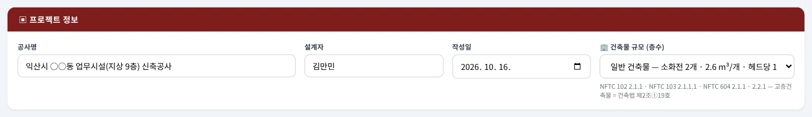
1234- 1공사명
- 2설계자
- 3작성일
- 4건축물 규모 — 일반 · 고층건축물 · 50층 이상
공사명 · 설계자 · 작성일은 A4 계산서 머리에 그대로 들어갑니다. 건축물 규모는 「일반 건축물」 · 「고층건축물(30층 이상 또는 높이 120 m 이상 · 49층 이하)」 · 「50층 이상」 3가지이며, 옥내소화전 개수(2 / 5개) · 수원(2.6 / 5.2 / 7.8 m³) · 스프링클러 헤드당 수원(1.6 / 3.2 / 4.8 m³)이 함께 바뀝니다.
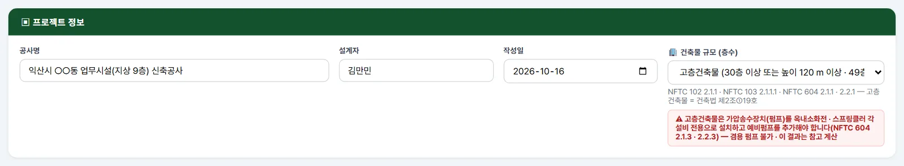
12- 1고층건축물 선택
- 2NFTC 604 2.1.3 · 2.2.3 — 겸용 펌프 불가
3-2. 옥내소화전 입력
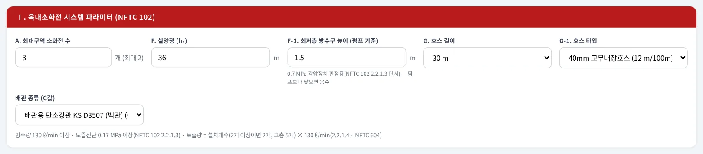
123456- 1A. 가장 많은 층 소화전 수
- 2F. 실양정
- 3F-1. 최저층 방수구 높이
- 4G. 호스 길이
- 5G-1. 호스 종류
- 6배관 종류(C값)
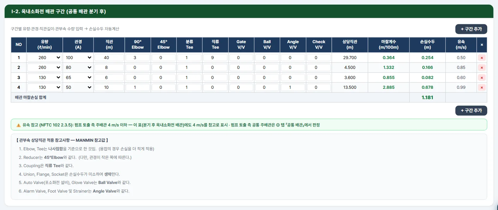
123- 11구간 — 분기 후 100A
- 24구간 — 방수구 50A
- 3＋ 구간 추가
| 항목 | 설명 |
|---|---|
| A. 소화전 수 | 가장 많은 층의 설치개수 — 2개 이상이면 2개(NFTC 102 2.1.1 · 2.2.1.4), 고층건축물 5개(NFTC 604 2.1.1) |
| F. 실양정 · F-1. 최저층 방수구 | 펌프에서 최고층 방수구까지 높이 · 펌프 기준 최저층 방수구 높이(0.7 MPa 감압 판정용) |
| G. 호스 | 15 · 30 m · 호스 종류별 손실률(MANMIN 참고값) — 호스릴은 14 m |
| 배관 구간 | 분기 후 옥내소화전 배관만 입력 — 펌프 토출 측 공통 배관은 ③ 탭에서. 유속은 NFTC 102 2.3.5의 4 m/s를 참고로 표시 |
3-3. 스프링클러 입력
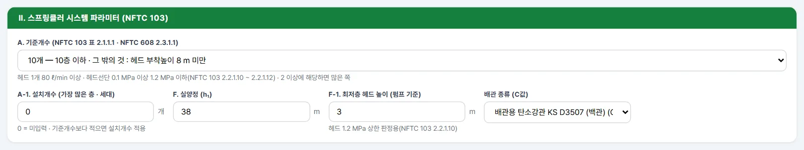
12345- 1A. 기준개수 — 표 2.1.1.1 · NFTC 608
- 2A-1. 설치개수
- 3F. 실양정
- 4F-1. 최저층 헤드 높이
- 5배관 종류(C값)
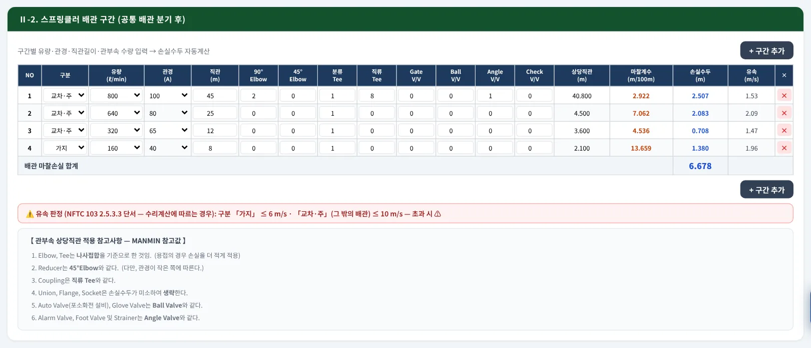
123- 1구분 — 가지 / 교차·주
- 21구간 — 교차·주 100A
- 34구간 — 가지 40A
| 항목 | 설명 |
|---|---|
| A. 기준개수 | NFTC 103 표 2.1.1.1 원문 7구분 + 아파트등(NFTC 608 2.3.1.1) 9가지 — 스프링클러 v5.1.0과 같은 표 |
| A-1. 설치개수 | 가장 많은 층(아파트는 세대)의 설치개수가 기준개수보다 적으면 그 수(2.1.1.1 괄호) — 0 = 미입력 |
| F-1. 최저층 헤드 | 펌프 기준 최저층 헤드 높이 — 헤드선단 1.2 MPa 상한(2.2.1.10) 판정용 |
| 구간 구분 | 「가지」 6 m/s · 「교차·주」 10 m/s — 수리계산에 따르는 경우(2.5.3.3 단서) |
3-4. 겸용 파라미터
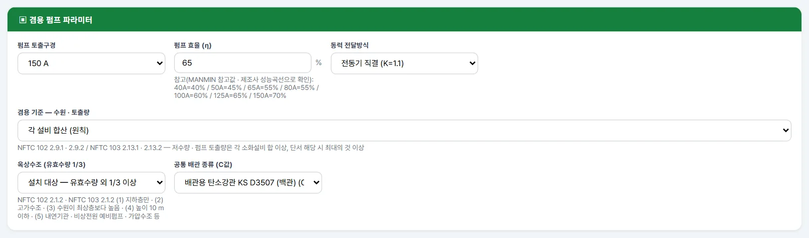
123456- 1펌프 구경
- 2펌프 효율
- 3전달방식
- 4겸용 기준 — 합산 / 방화벽 구획 최대값
- 5옥상수조 1/3
- 6공통 배관 종류
| 항목 | 설명 |
|---|---|
| 펌프 구경 · 효율 · 전달방식 | 효율은 직접 입력(구경별 참고값 안내) · 전동기 직결 K 1.1 / 그 밖의 원동기 1.15 — MANMIN 참고값 |
| 겸용 기준 | 「각 설비 합산(원칙)」 / 「최대값 — 고정식 소화설비 2 이상 · 방화벽과 방화문으로 구획 · 각 설비에 지장 없음(단서)」 — NFTC 102 2.9.1 · 2.9.2 / NFTC 103 2.13.1 · 2.13.2 |
| 옥상수조 | 유효수량 외 1/3 이상 — 면제 단서 해당 시 「면제」(NFTC 102 2.1.2 · NFTC 103 2.1.2 · 고층은 NFTC 604 2.1.2 · 2.2.2의 (2) · (3)만) |
| 공통 배관 종류 | 펌프 토출 측 공통 배관의 관 종류 — 1.2 MPa 판정에 포함 |
3-5. 공통 배관
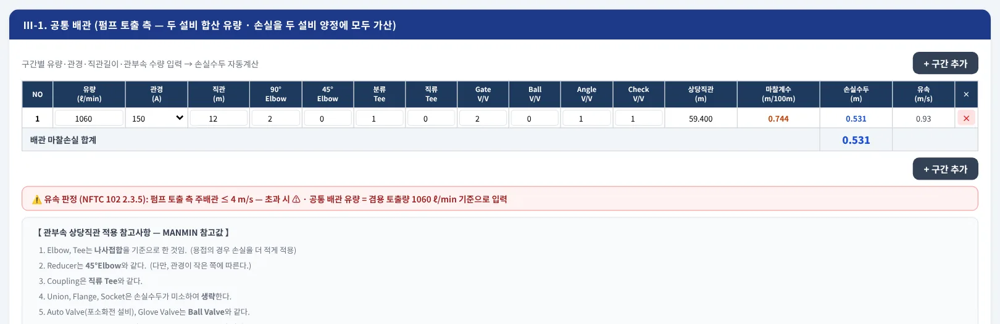
1- 1공통 배관 150A · 1,060 L/min
펌프에서 두 설비가 갈라지는 지점까지는 옥내소화전과 스프링클러 유량이 함께 흐릅니다(예제 A 1,060 L/min). v5.1.0은 이 구간을 따로 입력받아 손실 F₀(0.531 m)를 두 설비 양정에 모두 더하고, 유속을 NFTC 102 2.3.5(펌프 토출 측 주배관 4 m/s 이하)로 판정합니다(예제 A 0.93 m/s).
3-6. 설비별 결과
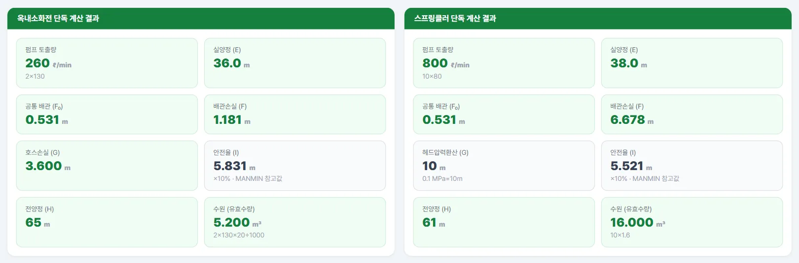
123- 1옥내소화전 단독 — 전양정 65 m
- 2스프링클러 단독 — 전양정 61 m
- 3공통 배관 F₀ 가산
각 설비의 토출량 · 실양정 · 공통 배관 F₀ · 분기 후 배관 F · 호스(헤드) · 안전율 · 전양정 · 수원(유효수량)을 카드로 보여 줍니다.
3-7. 겸용 결과 · 압력 판정
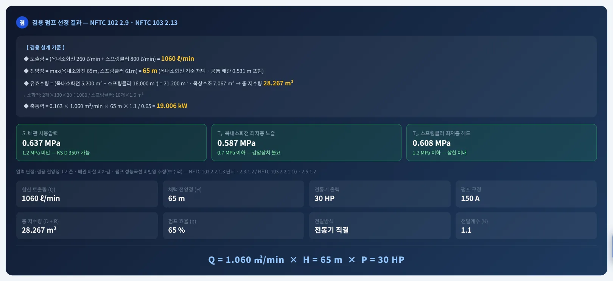
12345- 1겸용 설계 기준
- 2S 배관 사용압력
- 3T₁ 옥내소화전 최저층 노즐
- 4T₂ 스프링클러 최저층 헤드
- 5펌프 선정 결과
| 항목 | 내용 |
|---|---|
| 토출량 | Q = Q₁ + Q₂ = 1,060 L/min (단서 선택 시 max) |
| 전양정 | J = max(J₁ 65, J₂ 61) = 65 m — 옥내소화전 기준 채택(MANMIN 적용 — 각 설비 성능에 지장이 없을 것: NFTC 102 2.2.1.5 · NFTC 103 2.2.1.3) |
| 총 저수량 | D = D₁ + D₂ = 21.200 m³ + 옥상수조 7.067 m³ = 28.267 m³ |
| S. 배관 사용압력 | J × 0.0098 = 0.637 MPa — 1.2 MPa 이상이면 세 배관(옥내 · 스프링클러 · 공통) 모두 KS D 3562 · 3583(NFTC 102 2.3.1.2 · NFTC 103 2.5.1.2) |
| T₁. 옥내소화전 최저층 노즐 | (J − 최저층 방수구 높이 − 호스 손실) × 0.0098 = 0.587 MPa — 0.7 MPa 초과 시 감압장치(NFTC 102 2.2.1.3 단서) |
| T₂. 스프링클러 최저층 헤드 | (J − 최저층 헤드 높이) × 0.0098 = 0.608 MPa — 1.2 MPa 초과 시 감압 검토(NFTC 103 2.2.1.10) |
압력 판정은 배관 마찰을 빼지 않고 펌프 성능곡선을 반영하지 않은 추정(보수적)이며 계산값(토출량 · 양정 · 동력)에는 영향을 주지 않습니다.
3-8. 사례 — 29층 오피스텔
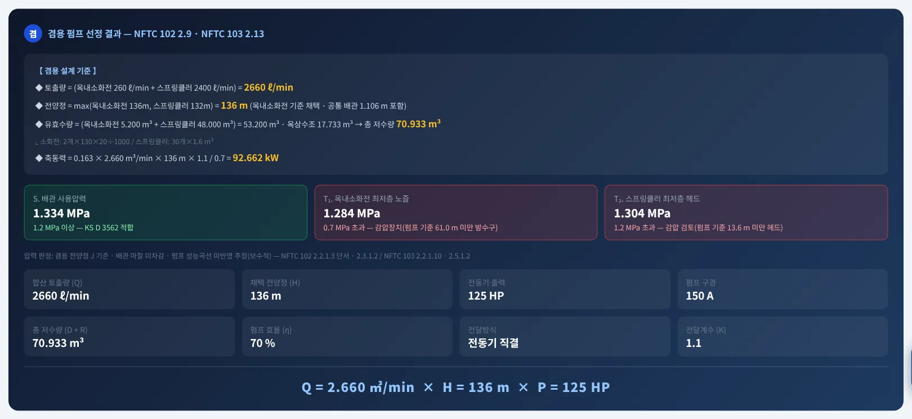
1234- 1합산 2,660 L/min · 70.933 m³
- 21.334 MPa — KS D 3562
- 3감압장치 필요
- 4헤드 1.2 MPa 초과 — 감압 검토
지상 29층 · 높이 105 m로 고층건축물(30층 이상 또는 120 m 이상)에는 해당하지 않아 겸용 펌프가 가능합니다. 지하층을 제외한 11층 이상이라 스프링클러 기준개수는 30개 — 260 + 2,400 = 2,660 L/min · 총 저수량 70.933 m³ · 전양정 136 m · 125 HP. 배관 사용압력 1.334 MPa로 1.2 MPa 이상이어서 세 배관 모두 KS D 3562를 골랐고, 옥내소화전 최저층 노즐 1.284 MPa(펌프 기준 61.0 m 미만 방수구 감압장치) · 스프링클러 최저층 헤드 1.304 MPa(펌프 기준 13.6 m 미만 헤드 감압 검토)입니다.
3-9. 사례 — 방화벽 구획
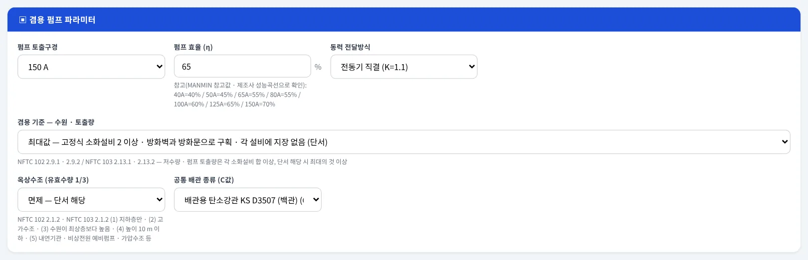
12- 1최대값 — 방화벽 · 방화문 구획
- 2면제 — 높이 10 m 이하
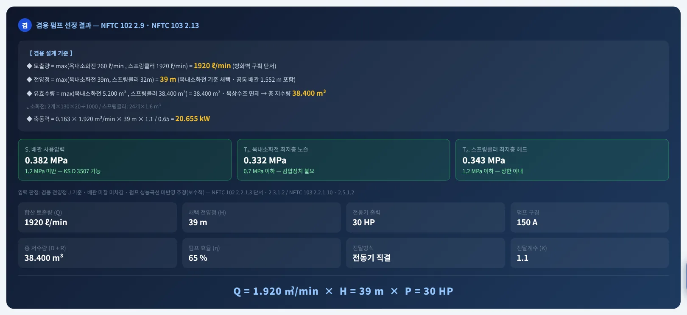
1- 1max(260, 1,920) · 38.400 m³
판매시설(지상 2층)로 스프링클러 기준개수는 30개이지만 가장 많은 층 설치개수 24개를 적용합니다. 옥내소화전과 스프링클러가 설치된 부분이 방화벽과 방화문으로 구획되어 각 설비에 지장이 없다는 전제로 「최대값」을 고르면 토출량 max(260, 1,920) = 1,920 L/min · 수원 max(5.200, 38.400) = 38.400 m³(높이 10 m 이하라 옥상수조 면제 — 2.1.2 단서 (4)) · 전양정 39 m · 30 HP입니다.
3-10. 계산식 안내 창
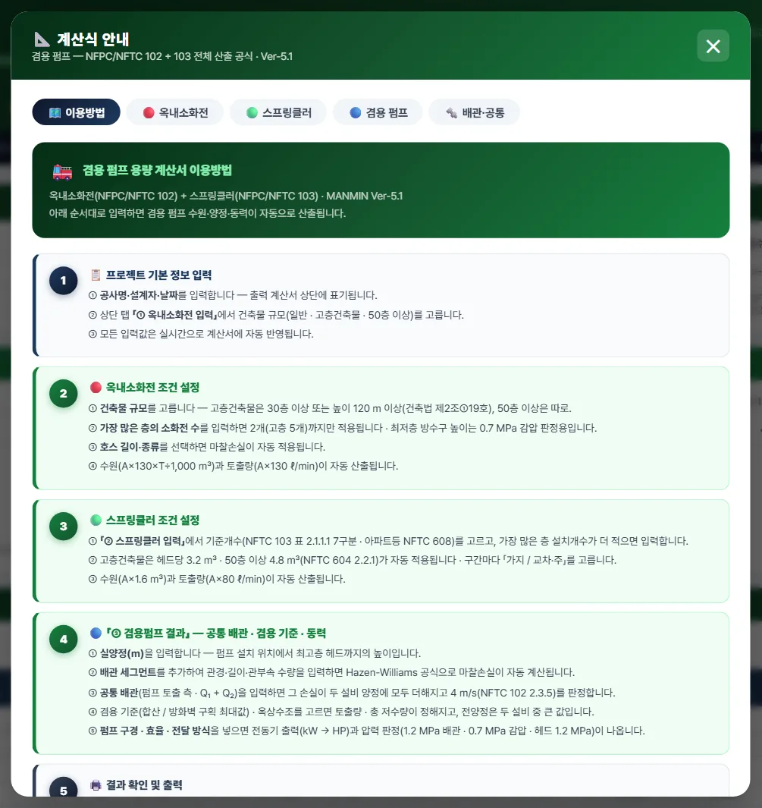
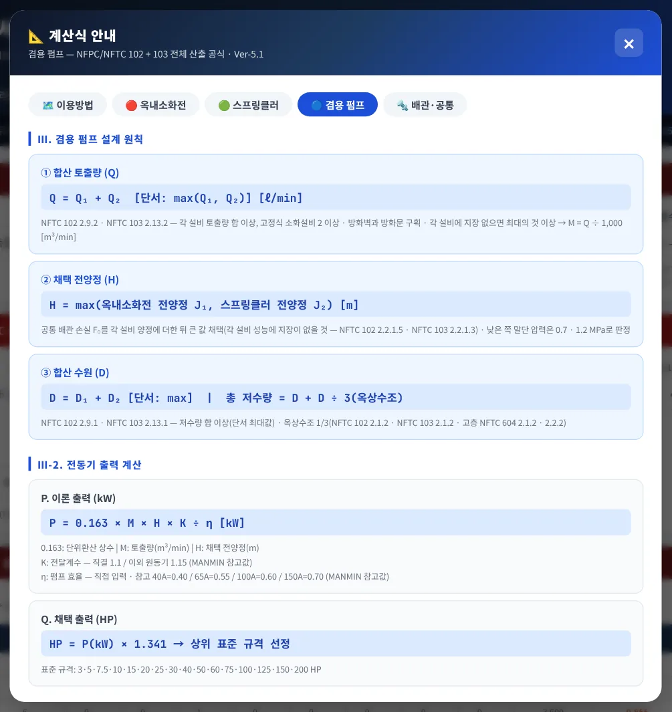
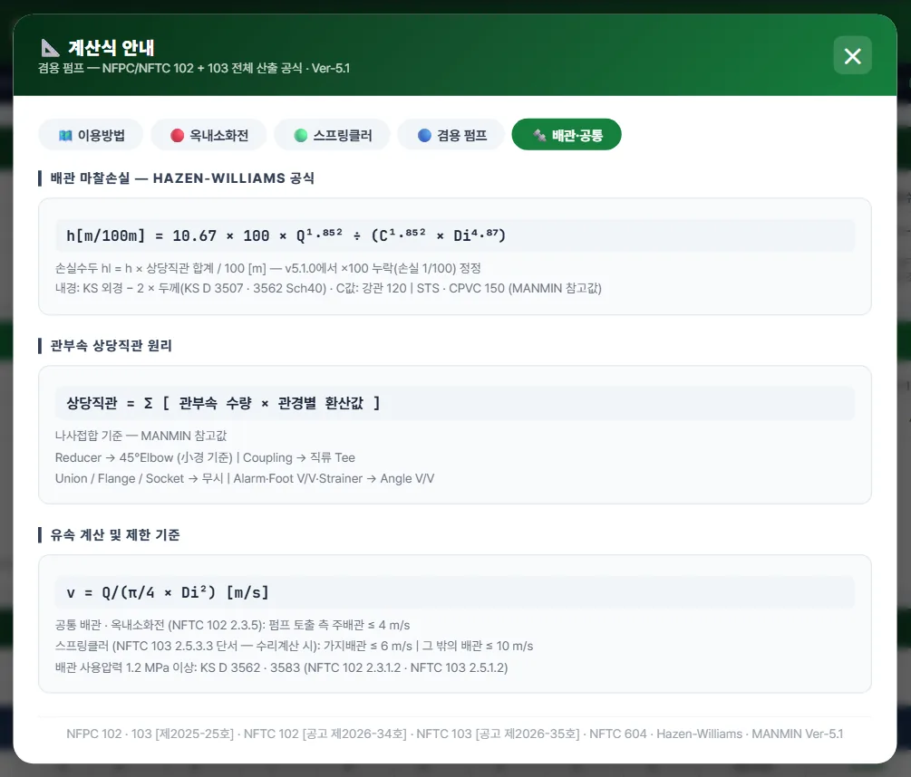
오른쪽 「📐 계산식」은 이용방법 · 옥내소화전 · 스프링클러 · 겸용 펌프 · 배관 · 공통 5개 탭입니다. 식마다 근거 조문과 MANMIN 참고값 여부를 적어 두었습니다.
3-11. A4 계산서·출력
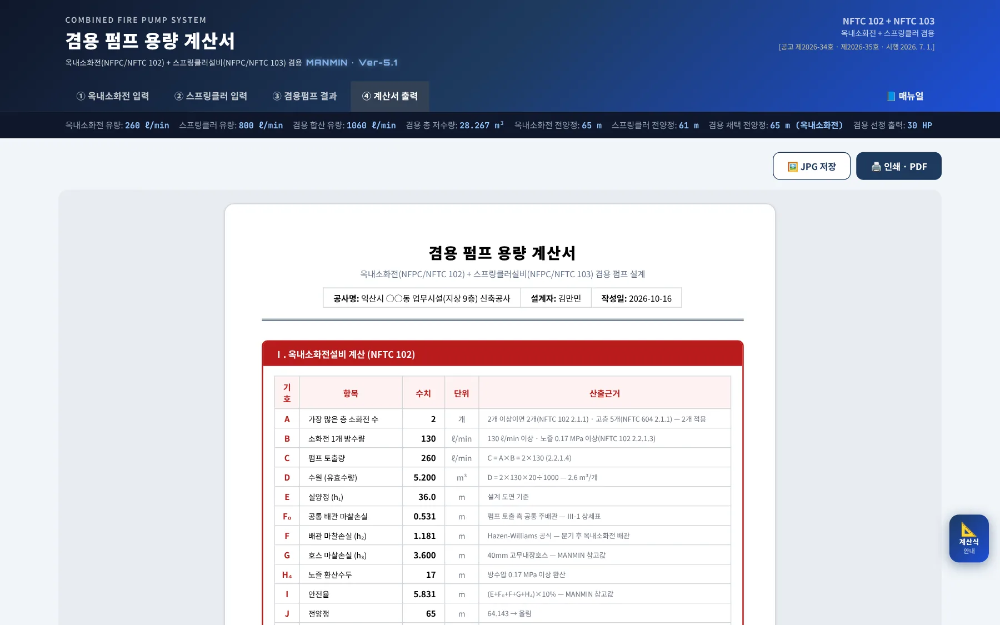
123- 1JPG 저장
- 2인쇄 · PDF
- 3A4 계산서
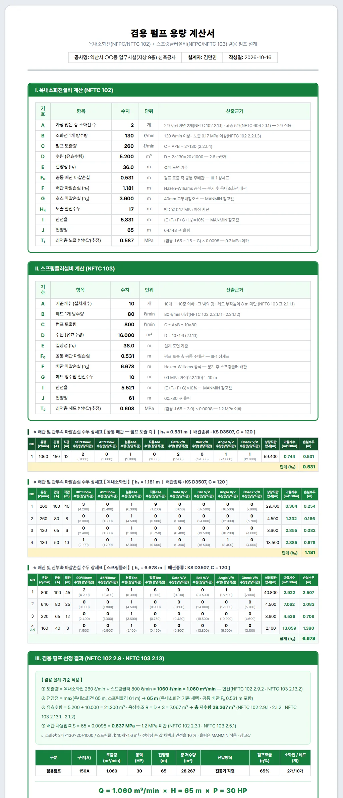
123- 1Ⅰ 옥내소화전 A ~ T₁
- 2공통 배관 F₀
- 3Ⅱ 스프링클러 A ~ T₂
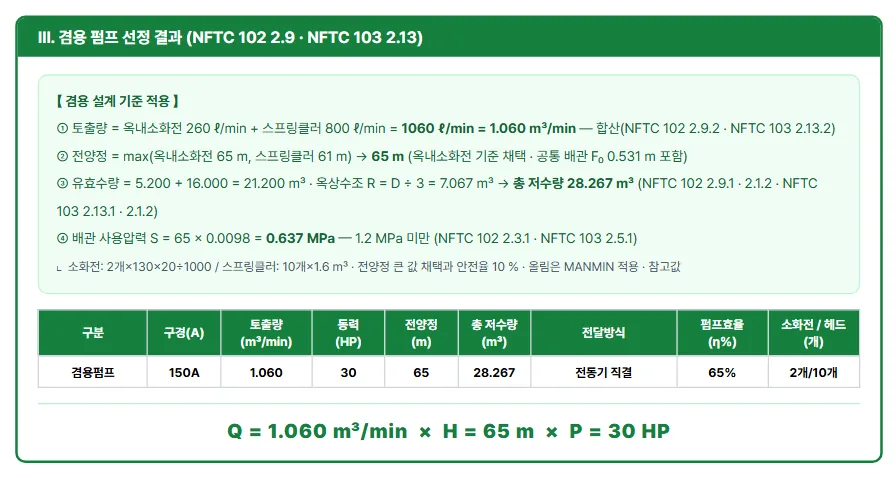
1- 1Ⅲ 겸용 — 토출량 · 전양정 · 총 저수량 · 압력
계산서는 Ⅰ 옥내소화전(A ~ J · T₁) · Ⅱ 스프링클러(A ~ J · T₂) · 공통 배관 · 옥내소화전 · 스프링클러 배관 마찰손실 상세표 · Ⅲ 겸용 펌프 선정 결과(토출량 · 전양정 · 총 저수량 · 배관 사용압력) · 적용 법령 및 기준 순입니다.
3-12. 휴대전화 화면
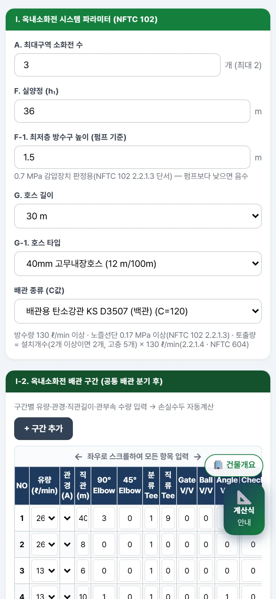
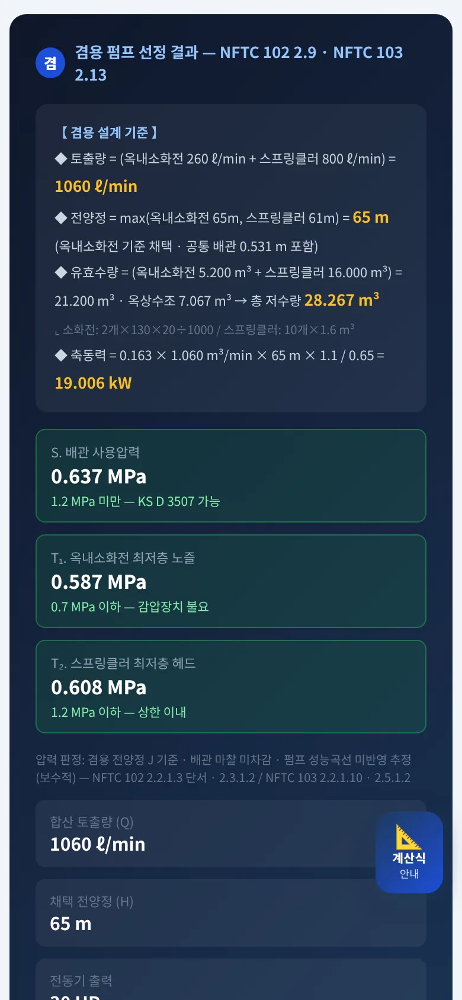
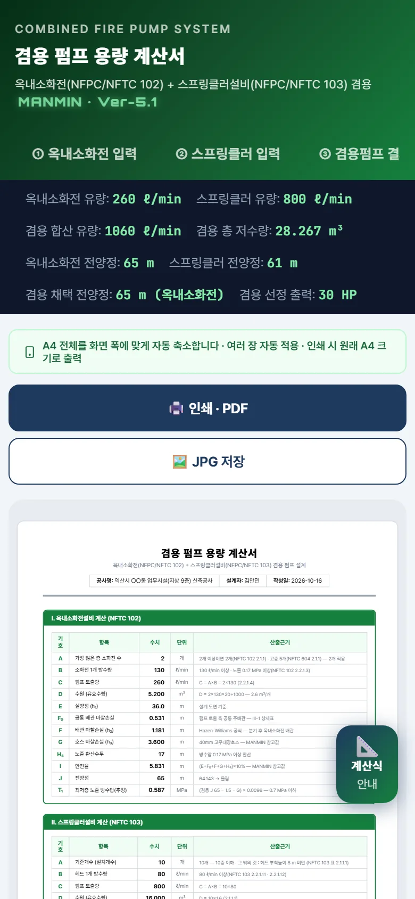
좁은 화면에서는 입력 칸이 쌓이고, 탭 막대는 좌우로 밀어서 봅니다. 배관 구간 표는 좌우로 밀어 입력합니다. A4 계산서는 화면 폭에 맞춰 축소해 보여 주며 인쇄 · JPG는 원본 A4 크기로 나옵니다.
04법령 해설
4-1. 근거 체계
| 기준 | 내용 |
|---|---|
| NFPC 102 · 103 (성능기준 · 고시) | 옥내소화전설비 · 스프링클러설비의 화재안전성능기준 — 소방청고시 제2025-25호(2026. 3. 1. 시행) |
| NFTC 102 (기술기준 · 공고) | 2.1 수원 · 2.2 가압송수장치 · 2.3 배관 · 2.9 수원 및 가압송수장치의 펌프 등의 겸용 — 국립소방연구원공고 제2026-34호(2026. 7. 1. 시행) |
| NFTC 103 (기술기준 · 공고) | 2.1 수원 · 2.2 가압송수장치 · 2.5 배관 · 2.13 수원 및 가압송수장치의 펌프 등의 겸용 — 공고 제2026-35호(2026. 7. 1. 시행) |
| NFTC 604 · 608 | 고층건축물 공고 제2023-44호(2.1 옥내소화전 · 2.2 스프링클러) · 공동주택 공고 제2026-40호(2.3.1.1 아파트등 기준개수) |
| 경과조치 | NFTC 1.5 — 시행 전 건축허가 등을 신청 · 신고했거나 착공신고한 대상은 종전 기준, 개정 기준이 유리하면 그에 따를 수 있음 |
LawMCP(국가법령정보센터) 원문 대조 2026-10-16 · NFTC 103 표 2.1.1.1은 이미지 표 — 스프링클러 v5.1.0 회차의 원문 PDF 대조 결과 사용
4-2. 겸용 기준
| 항목 | 기준 |
|---|---|
| 수원(저수량) | 각 소화설비에 필요한 저수량을 합한 양 이상 — 단서: 고정식 소화설비가 2 이상이고 그 부분이 방화벽과 방화문으로 구획되면 각 저수량 중 최대의 것 이상(NFTC 102 2.9.1 · NFTC 103 2.13.1) |
| 펌프 토출량 | 각 소화설비 토출량을 합한 양 이상 — 단서: 고정식 소화설비 2 이상 · 방화벽과 방화문 구획 · 각 소화설비에 지장이 없으면 토출량 중 최대의 것 이상(NFTC 102 2.9.2 · NFTC 103 2.13.2) |
| 펌프 전용 원칙 | 펌프는 전용 — 다른 소화설비와 겸용하는 경우 각각의 성능에 지장이 없으면 예외(NFTC 102 2.2.1.5 · NFTC 103 2.2.1.3) |
| 수조 유효수량 | 다른 설비와 겸용하는 수조는 각 설비 풋밸브 · 흡수구 사이의 수량을 유효수량으로(NFTC 102 2.1.5 · NFTC 103 2.1.5) |
| 전양정(MANMIN 적용) | 기준에 겸용 양정 식은 없음 — 두 설비 양정 중 큰 값을 채택하고, 낮은 쪽 말단 압력은 0.7 · 1.2 MPa로 판정 |
4-3. 수원 · 옥상수조
| 구분 | 기준 |
|---|---|
| 옥내소화전 | 가장 많은 층 설치개수(2개 이상이면 2개) × 2.6 m³ · 고층건축물 5개 × 5.2 m³ · 50층 이상 7.8 m³ |
| 스프링클러 | 기준개수(설치개수가 적으면 설치개수) × 1.6 m³ · 고층건축물 3.2 m³ · 50층 이상 4.8 m³ |
| 옥상수조 | 유효수량 외 1/3 이상 — 면제: (1) 지하층만 (2) 고가수조 (3) 수원이 최상층 방수구 · 헤드보다 높음 (4) 높이 10 m 이하 (5) 내연기관 · 비상전원 예비펌프 (6) 가압수조 등 · 고층건축물은 (2) · (3)만 |
4-4. 고층건축물
| 항목 | 기준 |
|---|---|
| 정의 | 「건축법」 제2조제1항제19호 — 층수 30층 이상 또는 높이 120 m 이상(NFTC 604 1.7.1.1) |
| 펌프 전용 · 예비펌프 | 옥내소화전(2.1.3) · 스프링클러(2.2.3) 가압송수장치는 각 설비 전용 + 주펌프와 동등 이상의 예비펌프 — 겸용 펌프 불가 |
| 비상전원 · 연료 | 40분(50층 이상 60분) 이상(2.1.4 · 2.1.7 · 2.2.9) |
| 앱 처리 | 고층건축물 · 50층 이상을 고르면 경고 표시 · 수원 · 양정은 참고 계산 |
4-5. 방수압 · 방수량
| 설비 | 기준 |
|---|---|
| 옥내소화전 | 2개(고층 5개) 동시 사용 시 노즐선단 0.17 MPa 이상 · 130 L/min 이상 — 0.7 MPa 초과 시 호스접결구 인입 측 감압장치(NFTC 102 2.2.1.3 · 2.2.1.4) |
| 스프링클러 | 헤드선단 0.1 MPa 이상 1.2 MPa 이하 · 80 L/min 이상 · 기준개수 × 80 L/min 이상으로 할 수 있음(NFTC 103 2.2.1.10 ~ 2.2.1.12) |
| 수조 식(참고) | 고가수조 H = h₁ + 10 m(스프링클러 식 2.2.2.1) · 압력수조 P = p₁ + p₂ + 0.1 MPa(식 2.2.3.1) |
4-6. 배관 · 유속
| 항목 | 기준 |
|---|---|
| 배관 재질 | 1.2 MPa 미만: KS D 3507 · 5301(습식) · 3576 · 3595 · 4311 / 1.2 MPa 이상: KS D 3562 · 3583(NFTC 102 2.3.1 · NFTC 103 2.5.1) |
| 펌프 토출 측 주배관 | 유속 4 m/s 이하 · 가지배관 40 mm(호스릴 25 mm) 이상 · 수직배관 50 mm(32 mm) 이상(NFTC 102 2.3.5) — 앱의 공통 배관 판정 |
| 스프링클러 배관 | 수리계산 시 가지배관 6 m/s · 그 밖의 배관 10 m/s 이하(NFTC 103 2.5.3.3 단서) |
| 급수배관 겸용 | 스프링클러 급수배관은 전용 — 기동과 동시에 다른 설비 송수를 차단할 수 있거나 성능에 지장이 없으면 겸용(NFTC 103 2.5.3.1) |
4-7. 마찰손실·강관 내경
| 호칭 | KS D 3507 (백관) | KS D 3562 Sch40 (흑관) | STS (참고) | CPVC (참고) |
|---|---|---|---|---|
| 40A | 41.6 | 41.2 | 42.8 | 40.9 |
| 50A | 52.9 | 52.7 | 54.8 | 52.5 |
| 65A | 67.9 | 65.9 | 70.0 | 62.7 |
| 80A | 80.7 | 78.1 | 85.0 | 79.4 |
| 100A | 105.3 | 102.3 | 108.2 | 101.6 |
| 125A | 130.8 | 126.6 | 133.4 | 127.0 |
| 150A | 155.2 | 151.0 | 160.0 | 154.1 |
| 200A | 204.7 | 199.9 | 210.0 | 203.2 |
강관 내경(mm)은 KS 외경 − 2 × 두께로 계산한 값입니다(옥내소화전 · 스프링클러 v5.1.0과 같은 표). STS · CPVC 내경은 제품마다 달라 MANMIN 참고값입니다.
4-8. MANMIN 참고값
| 항목 | 내용 |
|---|---|
| 전양정 채택 | 두 설비 양정 중 큰 값 — 기준에 겸용 양정 식 없음 |
| 안전율 · 올림 | (실양정 + 손실 + 방수압 수두) × 1.1 → 올림 — 기준에 펌프 양정 안전율 수치 없음 |
| 호스 · 관부속 | 호스 마찰손실률(40 mm 고무내장 12 m/100 m 등) · 관부속 상당직관 길이(나사 접합 기준) |
| 전달계수 · 효율 · C값 | K 전동기 직결 1.1 · 그 밖 1.15 · 효율은 사용자 입력 · C 강관 120 · STS · CPVC 150 — 제조사 성능곡선 · 제품 규격으로 확인 |
4-9. v5.1.0 정정 (2026-10-16)
| 항목 | 기존 | 정정 |
|---|---|---|
| 판 번호 | 「NFTC 102 · 103 (2026.03.01. 시행)」 | NFTC 102 공고 제2026-34호 · NFTC 103 공고 제2026-35호(2026. 7. 1.) · NFPC 102 · 103 고시 제2025-25호 |
| 배관 마찰손실 | 마찰계수(m/m)를 다시 ÷100 — 손실 1/100(기본값 h₂ 0.019 m) | m/100 m로 정정(기본값 h₂ 1.404 m) |
| 공통 배관 | 없음 | 펌프 토출 측 Q₁ + Q₂ 구간 · 두 설비 양정에 가산 · 4 m/s |
| 고층 구분 · 경고 | 「29층 이하 · 30 ~ 49층」 · 겸용 그대로 계산 | 30층 이상 또는 120 m(건축법 제2조①19호) · 겸용 펌프 불가 경고(NFTC 604 2.1.3 · 2.2.3) |
| 기준개수 · 설치개수 | 5구분 · 설치개수 없음 | 표 2.1.1.1 원문 7구분 + 아파트등 · 설치개수 입력 |
| 옥상수조 · 단서 | 없음 · 항상 합산 | 1/3 가산 · 면제 · 방화벽 구획 시 최대값 |
| 강관 내경 | 오차 17개 | KS 외경 − 2 × 두께 |
| 압력 판정 | 없음 | 1.2 MPa 배관 · 노즐 0.7 MPa 감압 · 헤드 1.2 MPa |
| 엔진 | 계산이 화면 컴포넌트 안 | cmb-engine cmbCalc 단일화 — 독립 구현 50,000건 대조 불일치 0 |
05실무 작업 방법
5-1. 단계별 절차
| 단계 | 내용 |
|---|---|
| ① 대상 · 규모 | 고층건축물 여부(30층 이상 또는 120 m) — 해당하면 겸용 펌프 불가 · 설비별 전용 펌프 + 예비펌프 |
| ② 설비별 조건 | 옥내소화전 개수 · 호스 · 스프링클러 기준개수(설치개수) · 설비별 실양정 · 최저층 높이 |
| ③ 배관 경로 | 펌프 → 공통 주배관(분기점까지) → 설비별 배관 · 관부속 수량 · 가지 / 교차·주 구분 |
| ④ 겸용 기준 | 방화벽 · 방화문 구획 여부(단서) · 옥상수조 면제 여부 |
| ⑤ 결과 · 판정 · 기록 | 토출량 · 총 저수량 · 전양정 · HP · 1.2 MPa 배관 · 감압 → A4 계산서를 소방설계도서 · 착공신고 서류에 첨부 |
5-2. 설계 · 승인 전 확인
| 항목 | 확인 |
|---|---|
| 기준 시점 | 건축허가 등 신청일 · 착공신고일에 따라 종전 기준 적용 여부(경과조치) |
| 펌프 선정 | 정격점 · 체절 140 % · 150 % 유량 65 % — 제조사 성능곡선으로 확인(NFTC 103 2.2.1.5 등) |
| 감압 | 전양정을 큰 쪽으로 잡으면 낮은 쪽 말단 압력이 올라감 — 감압밸브 · 구역 분할 검토 |
| 참고값 | 호스 · 관부속 상당길이 · 효율 · 안전율은 사용 제품 · 사무소 기준으로 바꿔 넣기 |
06문제 해결·FAQ
| 증상 | 해결 |
|---|---|
| 예전 판보다 전양정이 커졌어요 | v5.0은 배관 마찰손실이 1/100로 계산되었습니다. v5.1.0에서 바로잡았고 공통 배관 손실도 더하므로 다시 계산하십시오 |
| 고층건축물 경고가 떠요 | NFTC 604 2.1.3 · 2.2.3 — 고층건축물은 펌프를 설비별 전용으로 둡니다. 겸용 결과는 참고로만 보십시오 |
| 「최대값」은 언제 쓰나요 | 고정식 소화설비가 2 이상이고 각 설비 부분이 방화벽과 방화문으로 구획되며 각 설비에 지장이 없을 때만입니다 |
| T₁ · T₂가 빨간색이에요 | 해당 펌프 기준 높이 미만 방수구 · 헤드는 감압장치(밸브)를 검토하십시오 — 계산값은 그대로입니다 |
| 화면이 예전 판이에요 | 새로 고침(Ctrl+F5) 또는 앱을 닫았다 다시 여십시오 |
부록
A1. 예제 입력값
| 예제 | 설비 조건 | 겸용 조건 |
|---|---|---|
| 예제 A | 일반 · 옥내 3개 · 실양정 36 m · 스프링클러 10개 · 38 m | 합산 · 옥상수조 설치 · 공통 150A 1,060 L/min · η 65 % |
| 예제 B | 일반 · 옥내 2개 · 실양정 100 m · 스프링클러 30개 · 98 m | 합산 · 옥상수조 설치 · 공통 200A 2,660 L/min · η 70 % |
| 예제 C | 일반 · 옥내 2개 · 실양정 12 m · 스프링클러 30개 (설치 24개) · 11 m | 최대값(단서) · 옥상수조 면제 · 공통 150A 1,920 L/min · η 65 % |
A2. 예제 결과
| 예제 | 옥내 J₁(m) | 스프링클러 J₂(m) | 토출량(L/min) | 총 저수량(m³) | 전양정(m) | HP |
|---|---|---|---|---|---|---|
| 예제 A | 65 | 61 | 1,060 | 28.267 | 65 | 30 |
| 예제 B | 136 | 132 | 2,660 | 70.933 | 136 | 125 |
| 예제 C | 39 | 32 | 1,920 | 38.400 | 39 | 30 |
| 예제 | F₀(m) | S(MPa) | T₁(MPa) | T₂(MPa) |
|---|---|---|---|---|
| 예제 A | 0.531 | 0.637 | 0.587 | 0.608 |
| 예제 B | 1.106 | 1.334 | 1.284 | 1.304 |
| 예제 C | 1.552 | 0.382 | 0.332 | 0.343 |
A3. 버전 변경 내역
| 버전 | 내용 |
|---|---|
| Ver-5.1 · v5.1.0 (2026-10-16) | NFPC 102 · 103 · NFTC 102 · 103 · 604 원문 대조 근거 정정, 배관 마찰손실 ×100 정정, 공통 배관, 기준개수 표 원문 · 설치개수, 옥상수조, 방화벽 구획 단서, KS 강관 내경, 압력 판정, 고층건축물 겸용 불가 경고, 계산 엔진 단일화, 「📘 매뉴얼」 · 사용자 매뉴얼(4-9) |
| Ver-5.0 (2026-09) | MANMIN 디자인 통일(헤더 · 탭 · 요약 바 · A4 · JPG 저장), PWA |
A4. 용어
| 용어 | 뜻 |
|---|---|
| 겸용 | 두 소화설비가 수원(수조) · 가압송수장치(펌프)를 함께 쓰는 것 |
| 고정식 소화설비 | 펌프 · 배관과 소화수 또는 소화약제를 최종 방출하는 방출구가 고정된 설비(NFTC 102 2.9.1) |
| 공통 배관 | 펌프 토출 측에서 두 설비 배관이 갈라지는 지점까지의 주배관 — 두 설비 유량이 함께 흐름 |
| 고층건축물 | 층수 30층 이상 또는 높이 120 m 이상 건축물(건축법 제2조①19호) |
| 전양정 · 상당직관 | 펌프가 내야 하는 전체 수두 · 관부속 손실을 같은 지름 직관 길이로 바꾼 값 |